Paint - Defect Warranty Claim Information
10-001January 20, 2010
Applies To:
ALL
Photos For Warranty Paint Repair Claims
BACKGROUND
American Honda, its factories, and its suppliers are constantly striving to increase the quality, durability, and reliability of Acura vehicles. In the interest of making such improvements, as of March 2009, American Honda requires that digital photographs be taken of paint defects submitted for warranty repair.
Examples of paint defects include mismatched colors, dirt in the paint, gloss issues, paint runs, "hiding" (thin paint), etc. Photos of these defects help provide valuable product information to the factory for quicker analysis and development of countermeasures.
As a result, each Acura dealer is required to:
^ Take digital photos of paint defects submitted for warranty consideration.
^ Obtain DPSM authorization prior to starting any warranty paint repair.
^ Store warranty paint claim photos for 12 months, in accordance with the document retention policy outlined in the current Dealer Operations Manual.
NOTE:
A warranty claim may be subject to debit if the photos submitted do not adequately show the client's paint complaint.
WARRANTY CLAIM INFORMATION
None. This service bulletin is for information only.
PAINT DEFECT PHOTO GUIDELINES
^ Before photographing the paint defect, wash and completely dry the vehicle. Dirt, dust, and water spots visible in the photos may cover the paint defects and make them difficult to diagnose.
^ To properly document each warranty paint repair claim, four to five photos are required. These photos must be taken using a digital camera, with "macro" focusing capabilities, to provide detailed, in-focus close-ups.
^ For maximum clarity, the file size for each photo must be between 500 kb and 2,000 kb (2 mb). ZIP-compressed files are not acceptable.
^ Cell phone photos are not acceptable because of the phone's lack of focusing capability.
^ Before committing to paint repair, ensure that the photos you've taken are clear and in focus, and meet the standards and required number and type of photos for warranty claim submittal.
^ It's best to shoot multiples of each required shot; this gives you the widest choice of photos to choose from. To free up hard drive space after you've chosen your four or five best shots, delete the extra photos.
PAINT DEFECT PREPARATION
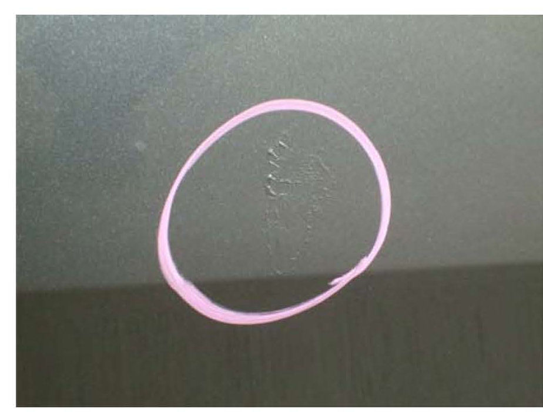
^ Before taking photos, outline the paint defect with a wide-tip Sharpie marker pen, a crayon, a grease pencil, masking tape, or stick-on paper notes. The marking material must contrast with the color of the paint, and should clearly identify the paint defect area.
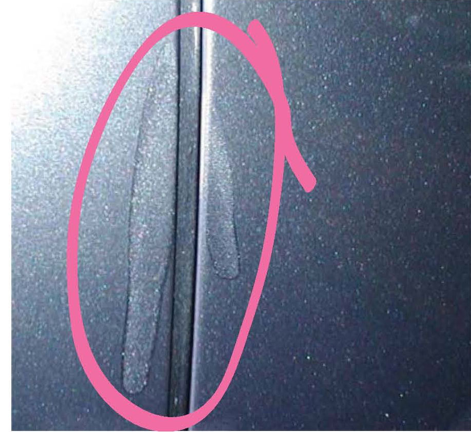
^ If the paint defect extends across body panels, run the marking material across the panels to show the location and full extent of the paint defect.
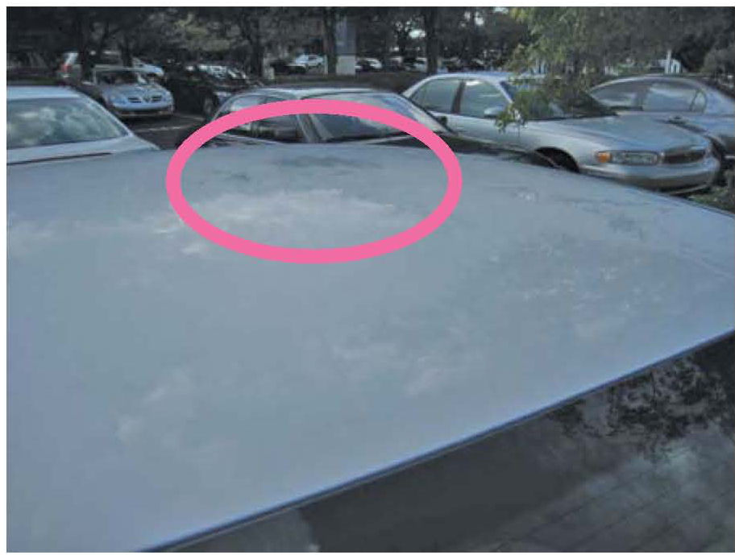
^ Alternatively, if you have a computer program that allows you to draw on digital photographs, you can use that to outline the defect area(s) on your photos.
TIPS FOR TAKING HIGH-QUALITY PAINT DEFECT PHOTOS
Automotive paint has evolved into an elaborate combination of color pigments, solid metallic flakes, pearl (coated mica), and transparent toners in the clear coat that give the paint its depth, color, and gloss.
As a result, some paint defects photograph better outdoors, while others do so indoors. To help decide where to photograph the defect, first determine whether the client complaint is for a surface paint defect, or if the defect is below the paint's surface. As a general rule:
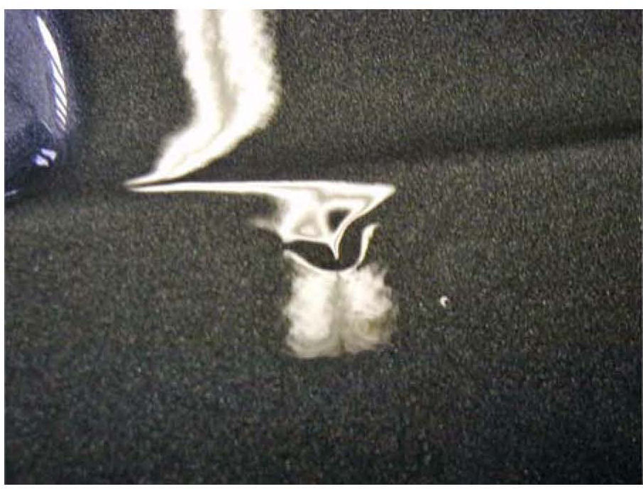
^ Surface paint defects photograph better inside a shop with artificial light, such as that produced by overhead fluorescent tubes. While viewing the vehicle through the camera's viewfinder or LCD screen, move the camera to position the fluorescent light's reflections over and around the defect carefully watching for distortions in the light that best reveal the surface defect.
^ Most paint defects photograph better with the flash off, the exception being dirt or fingerprints embedded in the paint, which may be highlighted by the flash's reflection. To determine which method will provide the best shots, take one shot with the flash on, and another with it off, then compare the two.
NOTE:
Photographing with the flash off might extend the shutter time, and may require the camera to be stabilized by mounting it on a tripod, or by holding it against something rigid.
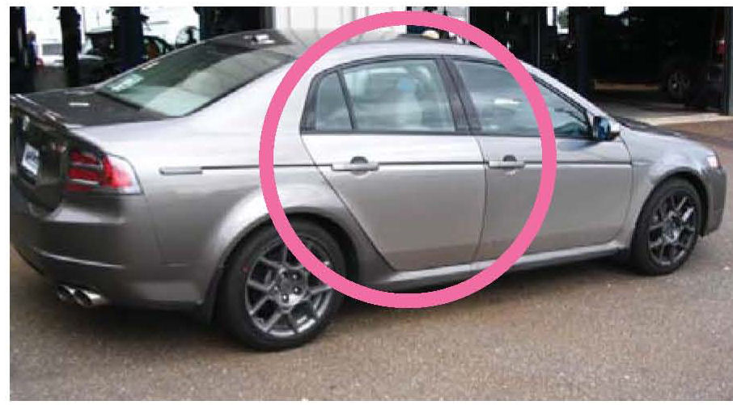
^ Paint defects under the clear coat surface photograph better outside in natural light, with the sun low in the sky, behind the photographer, and facing the defect. The hours between 8-11 a.m. and 2-6 p.m. usually provide the best light to photograph defects within the paint, as the sunlight at these times allows you to see through the clear coat into the paint.
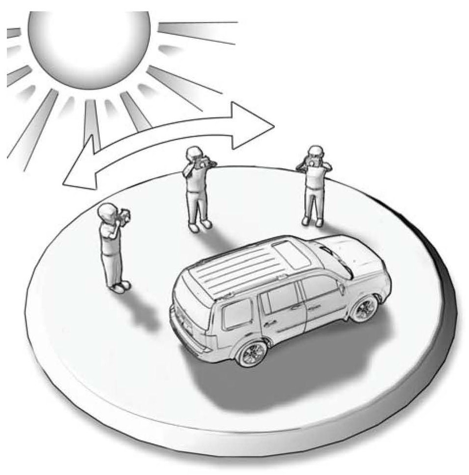
^ When shooting a defect under the surface, look at it straight-on, then move to look at the defect from multiple angles, carefully watching for the best light that reveals the defect, then snap that view of the defect with your camera. If needed, you may have to reposition the vehicle in relation to its light source to clearly reveal and photograph the paint defect.
REQUIRED PHOTOS TO MEET ACURA WARRANTY PAINT CLAIM STANDARDS
To properly document each warranty paint repair claim, four to five photos must be taken, as described below:
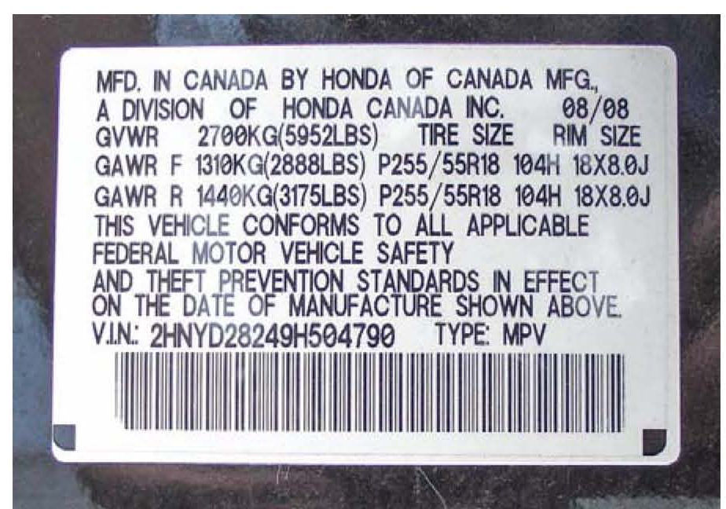
Photo One: Take a readable, in-focus shot of the vehicle's barcoded VIN sticker on the driver's side doorjamb.
Note:
If you shoot this using your camera's flash, make sure the flash's reflection does not reduce the VIN sticker's readability.
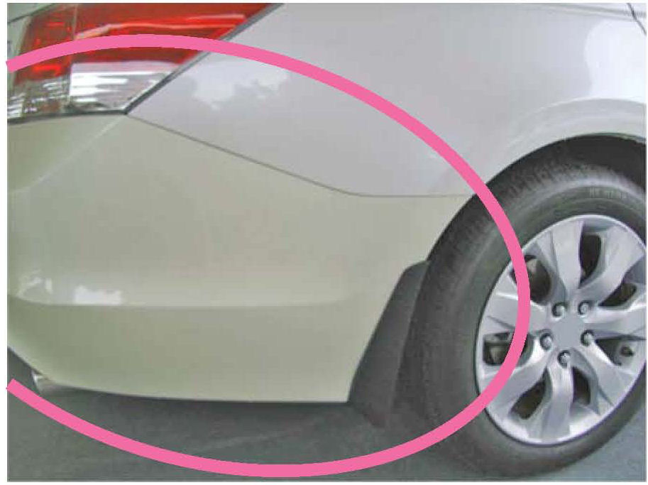
Photo Two: Take an orientation shot of the entire paint defect area, with the lens zoomed out wide enough to show the defect's location in relation to other body parts, such as door handles, windshield, headlights, bumper, side windows, wheel, etc.
Photos Three and Four: Take the third shot closer to the defect and from a different angle, to add more detail to the warranty repair claim. Then, if needed to further support the claim, take a fourth shot from another angle to make sure that the defect and/or its full extent are completely documented.
Photo Five: Take the last required shot as a sharply focused macro close-up, about 4 inches (100 mm) from the defect, showing exactly what the paint defect is. For example, if the defect is a mismatch in color, take a macro close-up of the mismatched panel and the correct color body panel together in the same shot.
Note:
To achieve a clear, close-up photo at this distance, you may have to manually focus the camera.
UNACCEPTABLE PAINT DEFECT PHOTO EXAMPLES
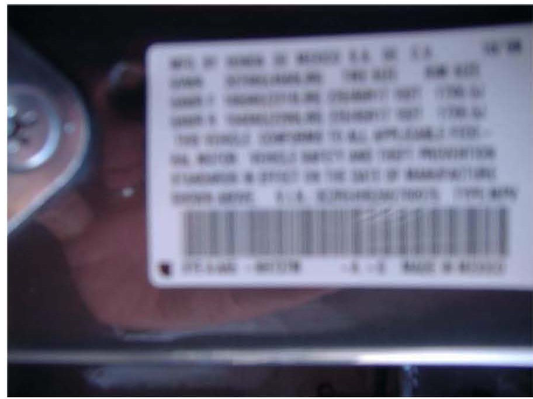
This photo is unacceptable because:
^ it is out-of-focus and unreadable, and
^ the file size is too small (351 kb).
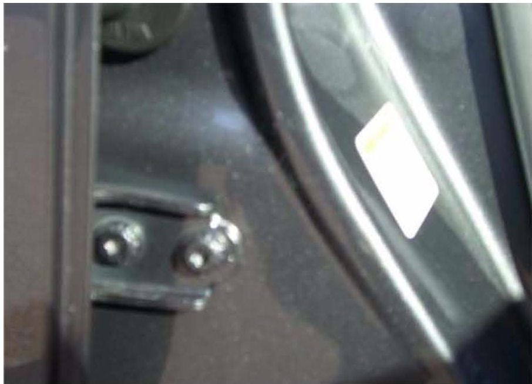
This photo is unacceptable because:
^ it is too dark, and
^ it lacks focus, detail, and marking materials that identify the area and extent of the paint defect, as specified in this service bulletin and per warranty claim submittal standards.
CORRECTING PAINT DEFECT PHOTO USING PICTURE MANAGER
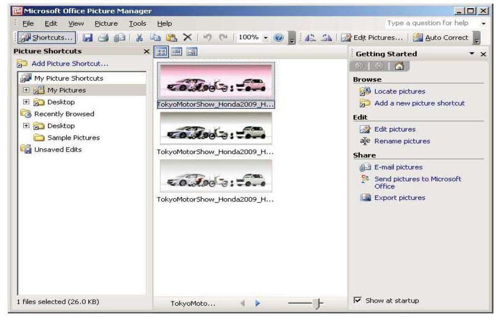
Microsoft Office Picture Manager is a very useful tool to help improve the quality of paint submitted for warranty consideration.
While the Picture Manager program cannot correct blurry, out-of-focus pictures, it can adjust pictures for brightness, contrast, and color, helping to reveal details. It can also crop, resize, or compress digital photo files so that they can be e-mailed for warranty claim consideration.
^ To use this program on your PC, select Start > Programs > Microsoft Office > Microsoft Office Tools > Microsoft Office Picture Manager.
^ If the above instruction does not lead you to the Picture Manager program, select Start > Search. Under Search for Folders or Files, type "Picture Manager" in the Search window, then click on Search Now.
^ Once Microsoft Picture Manager is open, you can create a shortcut to it on your computer's desktop by clicking on Add Picture Shortcut, which is located in the upper-left screen corner below the menu bar.
Correction Example # 1: Photo is too dark
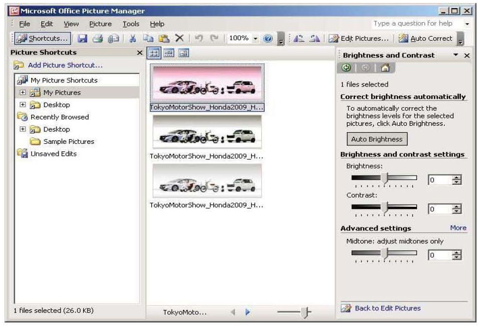
In Picture Manager, select Edit/Edit Pictures> Edit
Using These Tools/Brightness and Contrast. Use the sliding scales to adjust the photo to the brightness and contrast that best reveal the fault.
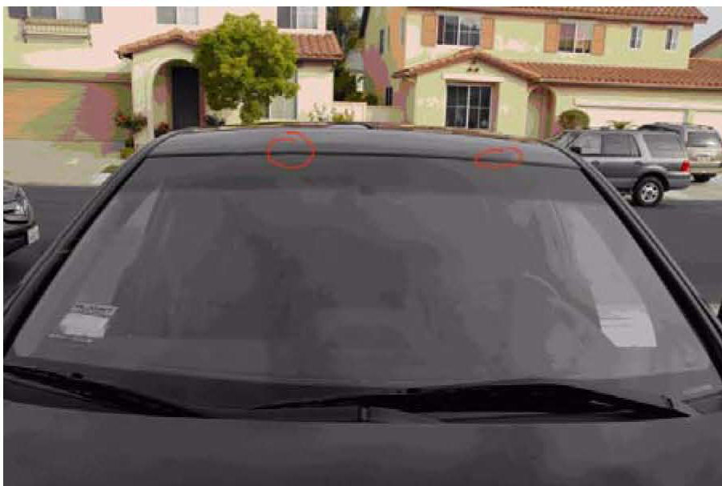
Before Picture Manager correction:
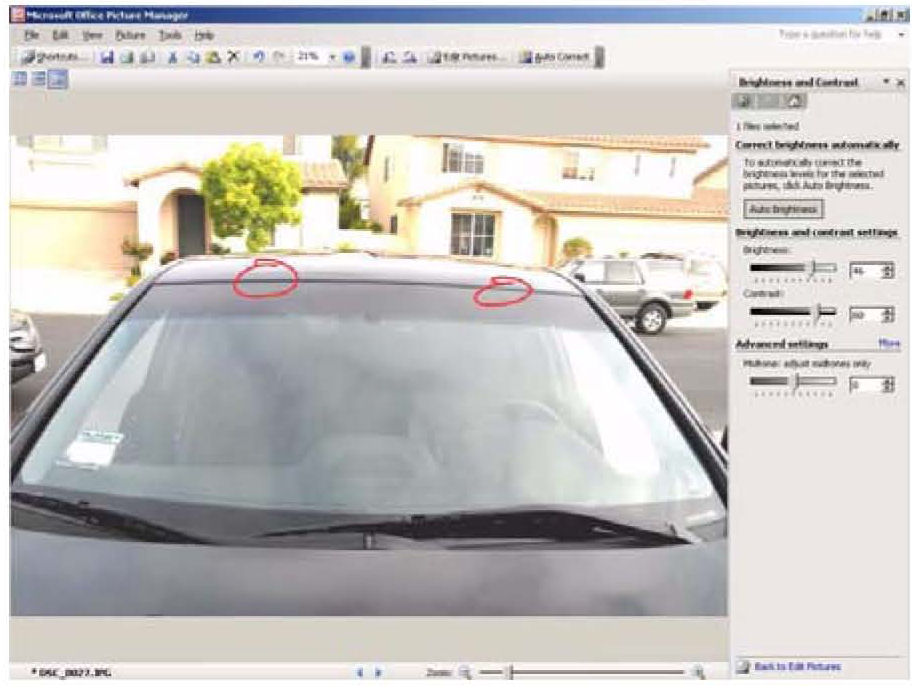
After Picture Manager correction:
Correction Example #2: Photo is too large to e-mail
If the photo file size exceeds 2,000 kb (2 mb), it cannot be accepted by the American Honda Warranty department.
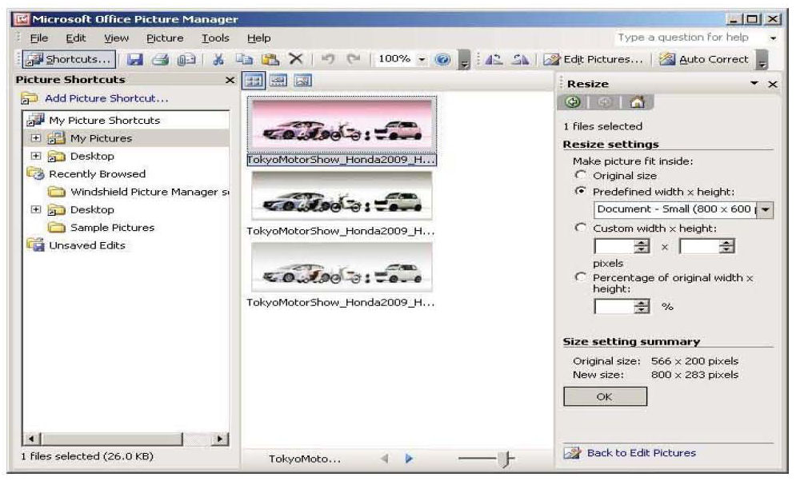
To reduce a picture's file size in Picture Manager, select Edit/Edit Pictures > Change Picture Size/ Resize Settings > Predefined Width x Height. Start with Document - Small (800x600 px), and see if this reduces the picture file size to below 2,000 kb (2 mb).
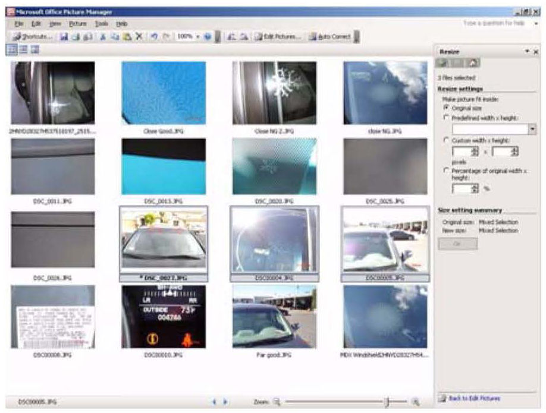
NOTE:
Batches of paint defect photos can be resized in a single operation by doing this:
^ Select all shots you want converted from the thumbnail photos stored in your paint defect warranty claim folder.
^ Click on Edit Pictures.
^ Click on Resize.
^ Choose a resolution size, such as 800x600 px, from Predefined Width x Height.
^ Click on OK.

Disclaimer